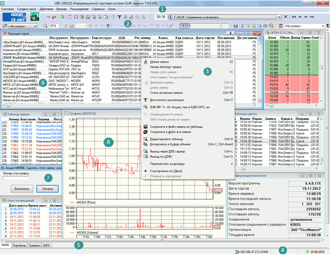

 Основными элементами интерфейса терминала системы QUIK являются: Меню программы предназначено для доступа ко всем функциям программы. Набор
пунктов меню зависит от прав пользователя системы QUIK на доступ к информации и совершение операций. Например, пункт «Новости» будет доступен в том случае, если
пользователю разрешено получение новостей. В Руководстве пользователя вызов пунктов меню отображается
жирным шрифтом, через косую черту (слеш). Например, фраза
Система/Соединения... означает, что нужно выбрать пункт «Соединения...» в меню «Система». Панель инструментов предназначена для быстрого доступа к основным функциям
программы. Она представляет собой набор из нескольких панелей, которые можно
включать/выключать и перемещать по экрану и располагать в несколько рядов. Чтобы
включить панель, наведите курсор на панель и нажмите правую кнопку мыши –
откроется контекстное меню со списком доступных панелей. Выбор нужной панели
осуществляется нажатием левой кнопки мыши. Также настройку панелей можно
выполнить из пункта меню программы Система/Настройки/Основные настройки..., раздел
«Программа» / «Панели инструментов». Значки на панели инструментов могут быть крупными либо мелкими
(например, или ).
Большие кнопки лучше видны, но мелкие кнопки занимают меньше места на экране.
Переключение размера выполняется из пункта меню программы
Система/Настройки/Основные настройки..., раздел «Программа» / «Панели инструментов», флажок
«Большие кнопки». Назначение каждой из кнопок подсвечивается подсказкой при наведении курсора на кнопку. Перечень панелей
инструментов Рабочего места QUIK и их назначение приведены в таблице:
Меню программы
Панель инструментов
Панель
Назначение
Картинка в углу
Анимированный индикатор «поезд» ,
отображающий поступление данных с сервера
Стандартная
Установление/разрыв связи, настройка таблиц, графиков, управление
заявками
Окно сообщений
Просмотр сообщений программы , переход между
сообщениями
Общий фильтр клиентов
Включение/отключение в таблицах фильтра по указанному коду
клиента
Общий фильтр рынков
Включение/отключение в таблицах фильтра по классу инструментов
Свои таблицы
Открытие таблиц с информацией по позициям, заявкам и сделкам
пользователя
Поиск инструмента
Быстрый поиск инструментов среди всех
доступных инструментов и открытие таблиц и графиков с информацией по найденным
инструментам
График
Управление окном графика, добавление
индикаторов, трендов, масштабирование
Назначение кнопок на панели см. в п. Назначение элементов Панели управления.
Контекстное меню позволяет настроить окно программы, а также вызвать другое окно, используя параметры в выбранной ячейке таблицы.
Контекстное меню может быть вызвано одним нажатием правой кнопки мыши. Двойное нажатие правой кнопки мыши используется в некоторых окнах для быстрого вызова функций (открытие графика, снятие заявки). Настройка реакции программы на нажатие правой кнопки мыши осуществляется через пункт меню Система/Настройки/ Основные настройки..., раздел «Программа» / «Контекстное меню», пункт «Правая клавиши «мыши».
Экранные вкладки предназначены для удобства расположения большого количества открытых окон и быстрого переключения между ними. Вкладки представляют собой «ярлычки» с названиями, которые можно расположить сверху или снизу от рабочей области программы. К каждой вкладке можно привязать одно или несколько окон, которые отображаются на экране только при выборе ярлычка данной вкладки.
Подробное описание работы с вкладками читайте в п. Экранные вкладки.
Строка состояния отображает состояние различных параметров программы: наличие связи с сервером, адрес сервера, получение данных, новых сообщений, настроенных оповещений, валюту цен. Отображение строки состояния включается/отключается через пункт меню Система/Настройки/ Основные настройки..., раздел «Программа» / «Панели инструментов», флажок «Строка состояния».
Многие функции программы можно вызвать, нажав определенную комбинацию клавиш, называемых «горячими клавишами». Если для вызова функции нужно нажать одновременно две или больше клавиш, то в тексте Руководства пользователя нужные клавиши указываются через знак «+» (плюс), например «Ctrl»+«Q» (нажать «Ctrl» и «Q»). Для настройки комбинаций горячих клавиш есть специальный редактор. Он доступен из главного меню Система/Настройки/ Редактор горячих клавиш… или вызывается комбинацией «Ctrl»+«H». Перечень используемых сочетания клавиш и их назначение см. в Приложении.